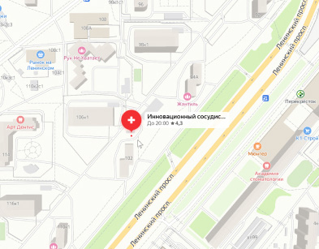

Карта сайта
- Главная
- О центре
- Информация
- Направления
- Клиники
-
Врачи
- Андрюшин Вадим Иванович
- Астафьева Евгения Валерьевна
- Белоусов Николай Александрович
- Бояркин Сергей Владимировчич
- Великова Ирина Викторовна
- Вересов Андрей Александрович
- Витовский Ярослав Александрович
- Деркач Владислав Валерьевич
- Деркач Надежда Васильевна
- Доброскокин Андрей Федорович
- Жидков Евгений Александрович
- Казинский Максим Александрович
- Калибабчук Елена Викторовна
- Калибабчук Игорь Антонович
- Калитко Игорь Михайлович
- Коваленко Дмитрий Сергеевич
- Меджидов Сабир Рустамович
- Милов Станислав Владимирович
- Михневич Алексей Валерьевич
- Павленко-Михайлова Наталья Юрьевна
- Перкова Елена Викторовна
- Полупан Юрий Александрович
- Портнов Роман Михайлович
- Седов Алексей Валериевич
- Симонян Шушаник Юриковна
- Степанов Игорь Анатольевич
- Стрелков Николай Митрофанович
- Тимошенко Вероника Яновна
- Цурилов Сергей Сергеевич
- Черняев Михаил Викторович
- Шиповский Владимир Николаевич
-
О заболеваниях
- Абдоминальная ишемия
- Аневризма аорты
- Аневризма печеночной артерии
- Аневризма подколенной артерии
- Аневризма почечной артерии
- Аневризма селезеночной артерии
- Аневризма сонной артерии
- Аритмии сердца
- Артерио-венозные мальформации
- Артроз локтевого сустава
- Артроз плечевого сустава
- Атеросклероз (стеноз и окклюзия) сонных артерий
- Атеросклероз и синдром позвоночной артерии
- Атеросклероз нижних конечностей
- Атеросклероз подключичной артерии (окклюзия и стеноз)
- Вазоренальная гипертензия
- Варикоз промежности
- Варикоз рук
- Варикозная болезнь
- Варикозное расширение вен малого таза
- Варикоцеле
- Венозная трофическая язва
- Влажная гангрена при диабете
- Гангрена и ишемия руки, пальцев, кисти
- Гангрена ноги
- Геморрой
- Гиперпаратиреоз
- Гипертоническая болезнь
- Деформирующий артроз коленного сустава (гонартроз)
- Диабетическая ангиопатия и нейропатия
- Диабетическая стопа
- Диабетическая флегмона стопы
- Инфаркт миокарда и нестабильная стенокардия
- Ишемическая болезнь сердца
- Ишемический инсульт
- Критическая ишемия нижних конечностей
- Легочная гипертензия после тромбоэмболии
- Лимфедема лица
- Лимфедема мошонки
- Лимфорея и лимфоцеле - тактика правильного ведения
- Лимфостаз (лимфедема) ноги
- Лимфостаз (лимфедема) руки после мастэктомии
- Метастазы в печень
- Невралгия
- Недостаточность кровообращения
- Нейротрофическая язва
- Некроз пальца
- Ожирение
- Острая ишемия конечностей
- Острая почечная недостаточность
- Патологическая извитость сонных артерий
- Портальная гипертензия
- Посттромботическая болезнь (ПТФС)
- Пролежень крестца
- Пролежень пятки
- Ретикулярный варикоз
- Сахарный диабет 1 типа
- Сахарный диабет 2 типа
- Синдром верхней апертуры (грудного выхода)
- Синдром диабетической стопы
- Синдром Мея-Тернера
- Синдром нижней полой вены
- Сосудистые звездочки
- Тромбоз глубоких вен
- Тромбоз подключичной вены
- Тромбофлебит подкожных вен
- Тромбоэмболия лёгочной артерии
- Трофическая язва Марторелла
- Узловой зоб (увеличение щитовидной железы)
- Эмболии артерий
- Эндартериит облитерирующий (болезнь Бюргера)
- Эректильная дисфункция
-
Методы
- PRP-терапия
- Ампутация бедра
- Ампутация верхней конечности
- Ампутация голени
- Ампутация пальца
- Ангиография артерий нижних конечностей
- Ангиография брюшной аорты и ее ветвей - Аортография
- Ангиография верхних конечностей
- Ангиография магистральных артерий головы
- Ангиография углекислым газом при почечной недостаточности и непереносимости йода (контраста)
- Ангиопластика и стентирование артерий ног
- Ангиопластика и стентирование глубоких вен
- Ангиопластика и стентирование коронарных артерий
- Ангиопластика и стентирование подключичной артерии
- Ангиопластика и стентирование чревного ствола и брыжеечных артерий
- Ангиопластика легочных артерий
- Ангиопульмонография
- Анестезия (блокада) плечевого сплетения
- Аорто-бедренное шунтирование
- Бандажирование ноги при лимфедеме
- Бандажирование руки при лимфедеме
- Бариатрическая эмболизация
- Бедренно-бедренное перекрестное шунтирование
- Бедренно-подколенное шунтирование
- Восстановление клапанов глубоких вен (вальвулопластика)
- Высокообъемная гемофильтрация
- Дерматофасциолипэктомия
- Диагностическая лапаротомия
- Иглорефлексотерапия
- Кавернозография
- Каротидная эндартерэктомия (удаление бляшек из сонных артерий)
- Компьютерная томография аорты и ее ветвей
- Компьютерная томография артерий нижних конечностей
- Компьютерная томография магистральных артерий головы, шеи и верхних конечностей
- Консультация кардиолога
- Консультация лимфолога
- Консультация невролога
- Консультация ортопеда
- Консультация реконструктивно-пластического хирурга
- Консультация сосудистого хирурга
- Консультация флеболога
- Консультация эндокринолога
- Коронарография
- Кроссэктомия - перевязка устья большой подкожной вены
- Лечение в отделении кардиологии и рентгеноэндоваскулярной хирургии
- Лечение в отделении сосудистой хирургии
- Лечение варикоза лазером
- Лечение веногенной эректильной дисфункции
- Лечение гипертонической болезни - препараты
- Лечение ожирения
- Лимфовенозные анастомозы
- Лимфография
- Липосакция при лимфостазе
- Микрохирургические вмешательства при эндартериите
- Микрохирургическое шунтирование артерий голени и стопы
- Общий массаж
- Окклюзия ушка левого предсердия
- Операции при нагноении сосудистых протезов
- Операция на I отделе позвоночной артерии
- Операция при аневризме брюшной аорты
- Островковая кожная пластика
- Очищение трофических язв
- Переливание крови
- Пересадка кожного лоскута на сосудистой ножке
- Пересадка лимфатических узлов
- Пересадка расщепленного лоскута кожи
- Пластика ран местными тканями
- Пневмокомпрессия ноги и руки при лимфедеме
- Подбор антитромботической терапии
- Подмышечно-бедренное шунтирование
- Подолог - лечение в кабинете диабетической стопы
- Посевы на микрофлору и чувствительность к антибиотикам
- Проверка и настройка электрокардиостимулятора
- Продленная эпидуральная анестезия
- Профундопластика
- Радиочастотная облитерация вен
- Растворение тромбов - катетерный тромболизис
- Резекция I ребра
- Резекция аневризмы печеночной артерии
- Резекция аневризмы почечной артерии
- Резекция аневризмы сонной артерии
- Резекция кишки
- Резекция мошонки с пластикой перемещенными лоскутами
- Резекция патологической извитости сонной артерии
- Резекция стопы
- Резекция стопы при гангрене и вскрытие диабетической флегмоны стопы
- Рентгенография костей
- Рентгенография легких
- Ручной лимфодренажный массаж ноги
- Ручной лимфодренажный массаж руки после мастэктомии
- Склеротерапия (склерозирование) сосудистых звездочек
- Склеротерапия вен при варикозе
- Сонно-подключичное шунтирование
- Спинальная анестезия
- Сплено-ренальный анастомоз
- Стентирование позвоночных артерий
- Стентирование почечных артерий
- Стентирование сонных артерий
- Суточное мониторирование артериального давления
- Терапия гипертиреоза
- Терапия гипертонической болезни
- Терапия нарушений ритма серца
- Терапия уровня сахара в крови
- Тестикуло-илеокальный анастомоз
- Трансвагинальное УЗИ органов и вен малого таза
- Трансъягулярное внутрипеченочное портосистемное шунтирование (TIPS)
- Тропониновый тест на инфаркт
- Удаление бляшек из позвоночной артерии
- Удаление кава-фильтра
- Удаление нагноившихся сосудистых протезов
- Удаление тромбов из артерий
- Удаление тромбов из артерий головного мозга
- Удаление шейного ребра
- УЗИ брюшной аорты и ее ветвей
- УЗИ вен нижних конечностей
- УЗИ вен семенного канатика и мошонки
- УЗИ диагностика артерий нижних конечностей
- УЗИ мягких тканей при лимфедеме
- УЗИ печени, почек, селезенки
- УЗИ сонных и позвоночных артерий
- УЗИ сосудов верхних конечностей
- УЗИ щитовидной железы
- Установка венозного порта для химиотерапии
- Установка кава-фильтра
- Установка стент-графта в периферическую артерию
- Установка электрокардиостимулятора
- Флебография с контрастом
- Флебэктомия
- Химиоэмболизация метастазов в печени
- Холтеровское мониторирование ЭКГ
- Шунтирование при посттромботической болезни
- Эзофагогастродуоденоскопия (ЭГДС)
- Экстренные операции при инфаркте миокарда
- Эластичная компрессия при лимфедеме
- Электрокардиография
- Эмболизация аневризмы
- Эмболизация маточных артерий при миоме
- Эмболизация при варикозном расширении вен малого таза
- Эмболизация яичковой вены при варикоцеле
- Эндартерэктомия из артерии
- Эндопротезирование аневризмы аорты - лечение без разрезов
- Эпидуральная анестезия
- Эхокардиография
